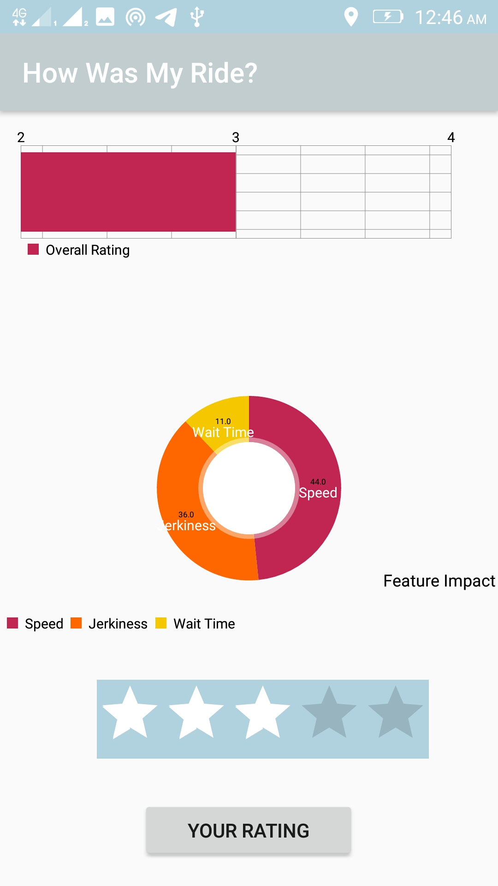

This app monitors your driver's driving style and lets you know how comfortable the ride was based on your personalized comfort requirements. The app learns from your feedback and improves the results. We have utilized efficient techniques to provide a personalized experience to every user. Additionally, the app also tells you which of the three factors, viz., Speed of the cab, Congestion on the road or jerkiness is affecting your comfort. The app provides continuous updates to you while on the ride and a final comfort rating as well as the impact of different parameters on the rating after the ride. So get to know how your ride was with this app.
When you start the application you have two options. If you are a first time user you should register yourself with the required details. Following which you could use the "Start Ride" button to use the app on subsequent rides.
When you start a ride, the app calculates your comfort level based on different features it calculates from the data collected using the smartphone sensors. The bar chart shows your comfort level based on the driving style periodically. The colors on this bar are just to distinguish each update. The pie chart below shows the impact of Speed of the Vehicle, Jerkiness of the ride and the Waiting Time on the trip. The waiting time takes into consideration the wait because of congestion, traffic signal or any other reason. Once your ride is complete please tap the "END RIDE" button to proceed.
Once you press the "END RIDE" button you are shown the overall rating and the overall impact of each feature. Please select the overall comfort rating you believe is suitable for the ride and tap "YOUR RATING" to submit the same. This helps us improve the rating over subsequent rides.
Please do not use only the results of this app to provide ratings to your driver. This app just is an indicator of your comfort level. Consider other factors too while rating your driver.